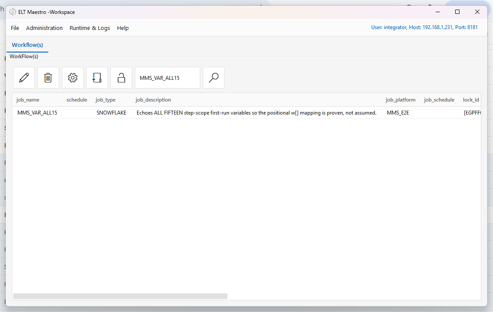
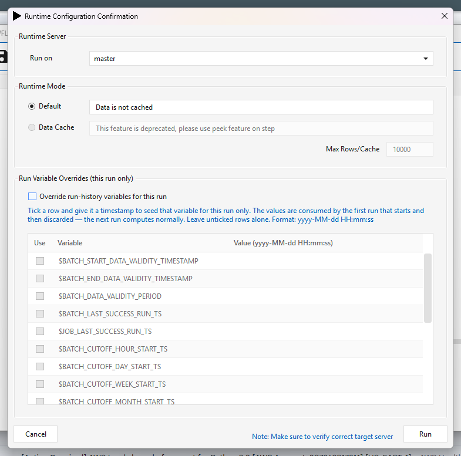
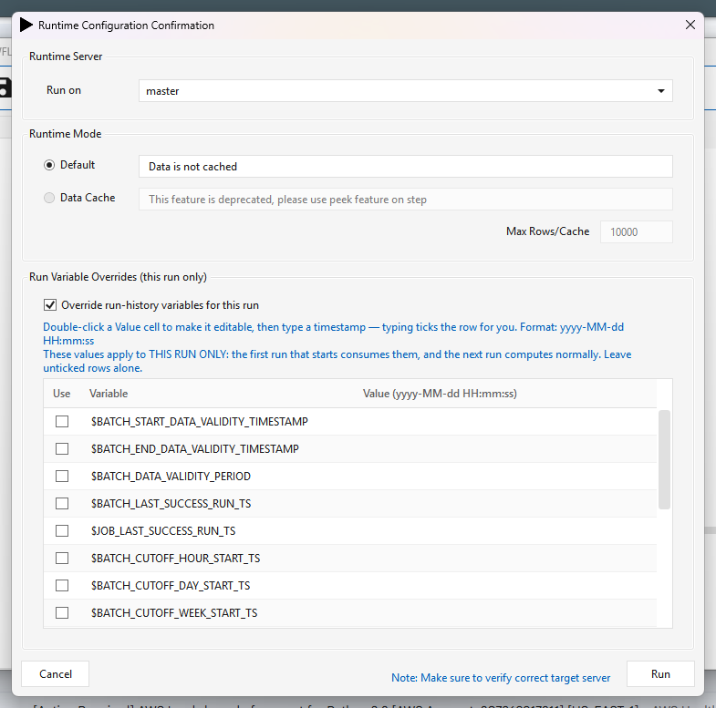
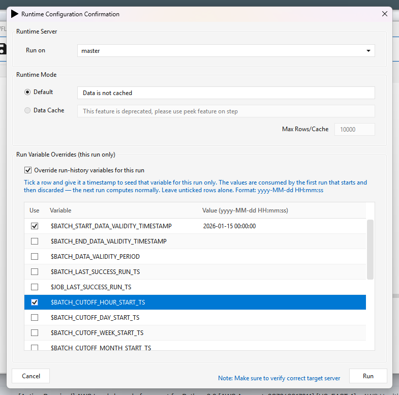
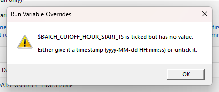
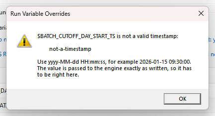
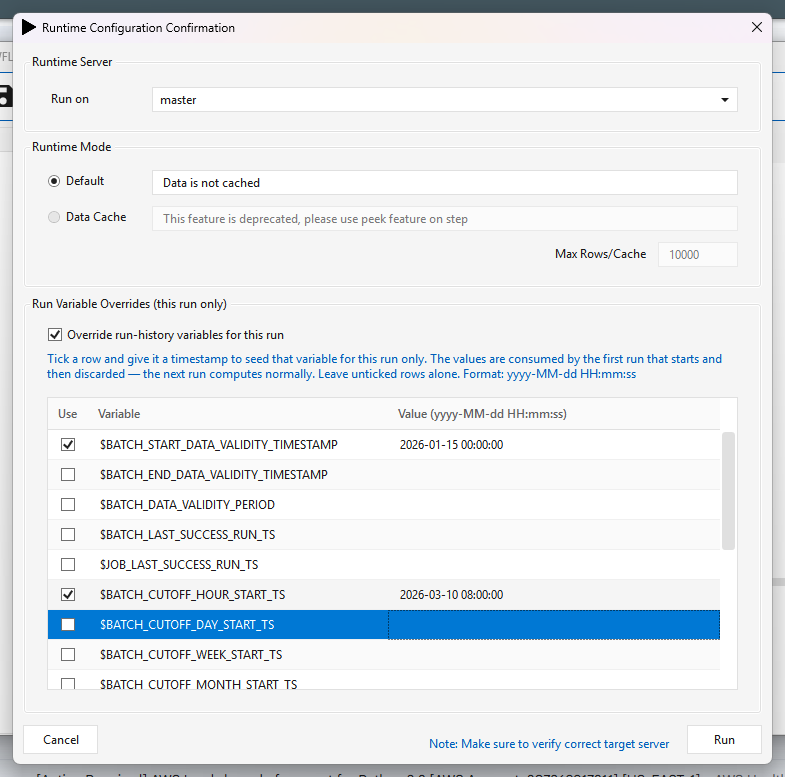
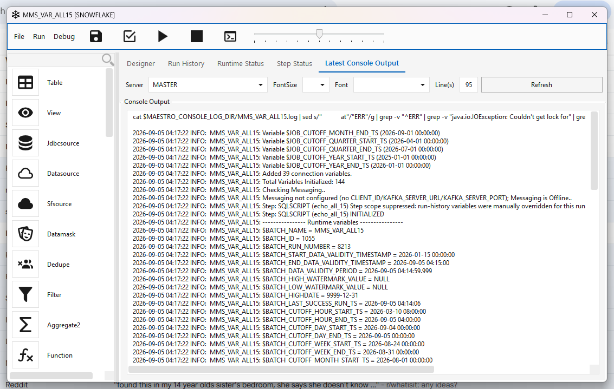

Run Variable Overrides¶
Seeding the run-history variables for a single manual run.
Applies to server patch e45c8bfc5 (5 September 2026) or later, with desktop client 2.5.5.20260905 or later. The engine half alone does nothing; the client alone writes a file nothing reads. You need both, in either order.
Engine-side detail — resolution order, step scope, and how the two interact — is in Runtime variables.
What problem this solves¶
The batch and job window variables — $BATCH_START_DATA_VALIDITY_TIMESTAMP, the
$BATCH_CUTOFF_*_START_TS family, and their $JOB_* counterparts — are derived from run
history. They are not settable in the workflow, because their whole purpose is to describe what
has already happened.
That is correct at run time and painful during development. To answer "what would this job load if the batch had last succeeded in January?" you previously had to edit the audit database by hand, run, and then remember to put it back. Getting that wrong leaves a workflow silently loading the wrong window on its next scheduled run.
This feature lets a developer seed those variables for one run, from the Run dialog, with no database editing and nothing to undo afterwards.
Using it¶
1. Open the workflow and press Run¶

2. The Run dialog now carries a third section¶
Everything above it is unchanged. With the box unticked the run behaves exactly as it always has — this is the default, and an existing user who ignores the section sees no change in behaviour.

3. Tick Override run-history variables for this run¶
The grid becomes editable and lists every variable the engine will accept.

4. Double-click a Value cell, then type a timestamp¶
The cell only becomes editable on a double-click — a single click just selects the row. The dialog says so above the grid.
Format is yyyy-MM-dd HH:mm:ss (fractional seconds are accepted, e.g. 2026-03-01 23:59:59.999,
which is the form the engine itself uses for $BATCH_DATA_VALIDITY_PERIOD).
Typing a value ticks the row for you — you do not have to remember to tick Use as well. The tick is there so you can park a value without applying it; untick it and the row is ignored. The Use box also toggles on a single click.

5. Bad input stops the run, at the point you can still fix it¶
A ticked row with no value is a half-finished edit, not an instruction. Rather than quietly ignoring it — which would look exactly like the feature not working — the dialog names the variable and waits.

A value that is not a valid timestamp is refused the same way, and the message shows what you typed:

This check matters more than it looks. Nothing downstream validates these values — the engine
substitutes them verbatim — so not-a-timestamp would reach whatever SQL or comparison finally
consumes the variable. Best case that is a step failure with a confusing message. Worst case the
comparison simply matches nothing, the job loads no rows, and the run reports success.
6. Press Run¶

7. The run uses the seeded values, and only those¶
Only the variables you set are changed. Everything else is computed exactly as normal — note below
that $BATCH_START_DATA_VALIDITY_TIMESTAMP is the seeded 2026-01-15, while
$BATCH_CUTOFF_HOUR_START_TS, $BATCH_CUTOFF_DAY_START_TS and the rest are still their real
computed values.

What the engine does with it¶
The client writes $MAESTRO_TMP_DIR/<JOB_NAME>.var.json on the target server immediately before
requesting the run number. The engine reads it during initializeEngine, applies the values,
deletes the file, and logs what it did:
(VariableOverrides) *** 2 RUN-HISTORY VARIABLE(S) MANUALLY OVERRIDDEN for job [MMS_VAR_ALL15] ***
(VariableOverrides) source: /data/iserver/transient/staging/MMS_VAR_ALL15.var.json, set by: integrator
(VariableOverrides) $BATCH_CUTOFF_DAY_START_TS = 2026-02-20 06:30:00
(VariableOverrides) $BATCH_START_DATA_VALIDITY_TIMESTAMP = 2026-01-15 00:00:00
(VariableOverrides) This applies to THIS RUN ONLY -- the file is now deleted and the next run computes normally.
(VariableOverrides) consumed and deleted /data/iserver/transient/staging/MMS_VAR_ALL15.var.json
(VariableOverrides) OVERRIDDEN $BATCH_START_DATA_VALIDITY_TIMESTAMP: computed [2026-09-05 03:50:00] -> using [2026-01-15 00:00:00] (from ..., set by integrator)
Those lines are written at warning volume on purpose. A run whose watermarks were set by hand must not read as an ordinary run to whoever inspects the log later asking why data was re-loaded or skipped.
It is genuinely one-shot¶
The next run of the same workflow recomputes normally. Verified: the run immediately after an
overridden one logged no VariableOverrides lines at all and echoed the real computed values.
Interaction with step scope¶
Step scope (the first-run backfill for a newly-added step) stands down when overrides are active, and says so:
Step: SQLSCRIPT (echo_all_15) Step scope suppressed: run-history variables were manually
overridden for this run (...). The override wins.
Both features exist to control the same window. If both applied, the result would depend on ordering. The explicit instruction wins.
The file format¶
You can also write the file by hand — the engine does not care who produced it.
{
"version" : 1,
"jobName" : "MMS_VAR_ALL15",
"createdBy" : "integrator",
"createdUtc" : "2026-09-05T09:01:13Z",
"expiresUtc" : "2026-09-05T09:31:13Z",
"overrides" : {
"$BATCH_START_DATA_VALIDITY_TIMESTAMP": "2026-01-15 00:00:00",
"$BATCH_CUTOFF_DAY_START_TS" : "2026-02-20 06:30:00"
}
}
| Field | Meaning |
|---|---|
version |
File format. A version newer than the engine understands is refused, not guessed at. |
jobName |
Must match the running job. Stops a file copied from another job retargeting itself. |
expiresUtc |
Hard stop. The file is keyed on job name, not run number, so a run that never started must not leave a landmine. The client sets 30 minutes. |
overrides |
Variable name → value. Names must include the leading $. |
Overridable variables¶
$BATCH_START_DATA_VALIDITY_TIMESTAMP $BATCH_END_DATA_VALIDITY_TIMESTAMP
$BATCH_DATA_VALIDITY_PERIOD
$BATCH_LAST_SUCCESS_RUN_TS $JOB_LAST_SUCCESS_RUN_TS
$BATCH_CUTOFF_HOUR_START_TS $JOB_CUTOFF_HOUR_START_TS
$BATCH_CUTOFF_DAY_START_TS $JOB_CUTOFF_DAY_START_TS
$BATCH_CUTOFF_WEEK_START_TS $JOB_CUTOFF_WEEK_START_TS
$BATCH_CUTOFF_MONTH_START_TS $JOB_CUTOFF_MONTH_START_TS
$BATCH_CUTOFF_QUARTER_START_TS $JOB_CUTOFF_QUARTER_START_TS
$BATCH_CUTOFF_YEAR_START_TS $JOB_CUTOFF_YEAR_START_TS
Anything else in the file is skipped with a logged reason, not silently dropped. A name written
without its $ is skipped too, and the message tells you the spelling to use — being lenient there
would let a typo look like it had been honoured, in a file whose entire job is to change watermarks
by hand.
Safety properties¶
These were design requirements, not accidents:
- Absent file == today's behaviour, exactly. No file means an empty map and every call site returns what it computed. Existing workflows and schedules are untouched.
- Never fatal. A malformed, expired, wrong-job or unreadable file is logged, deleted and ignored. A development convenience that can break a production run is worse than no feature.
- Always consumed. Even a file the engine refused is deleted, so it cannot be retried on the next run.
- Scheduled runs are unaffected. Only the Run dialog writes the file, and only for the run it is starting.
- If the file cannot be written, the client asks first. You get a Yes/No rather than a run that silently ignores what you typed.
Limitations¶
- One override file per job name at a time. Two people overriding the same workflow simultaneously will collide — the second write wins and the first run consumes whatever is there. This is a development feature; coordinate.
- Format is enforced by the dialog, not the engine. A file written by hand is not checked —
the engine will accept and substitute whatever a hand-edited
overridesblock contains. - The check is on shape, not sense.
2026-02-30 00:00:00is rejected (no such date), but a well-formed timestamp pointing at the wrong window is accepted and will happily reload years of data. The dialog cannot tell you what you meant.